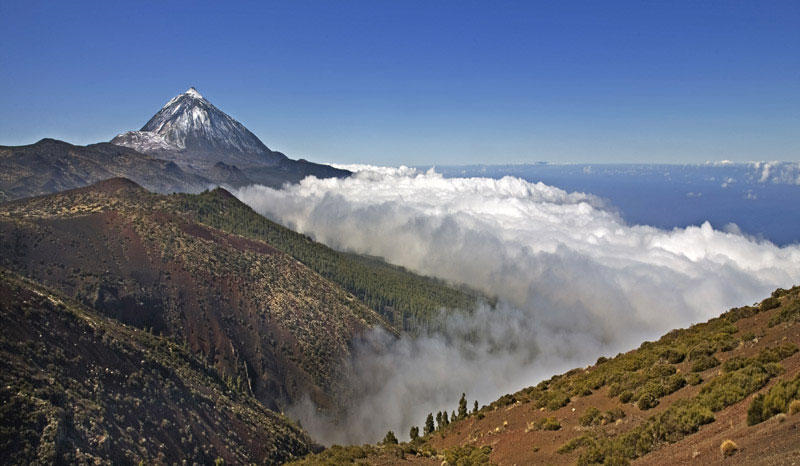
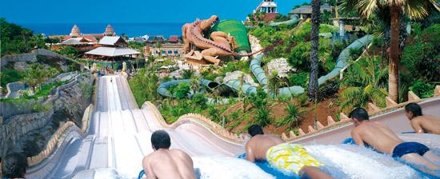

Spain
The country I have visited the most
 The country which I have travelled to the most is Spain. In total I have travelled there five times; three times to Malaga and twice to Tenerife, an island on the Canaries off the west coast of Africa.
Spain is geographically the fourth largest country in Europe, and the sixth largest by population, comprising over 46.3 million citizens. The country also has a long and rich history, transitionong from many independent kingdoms into one of the world largest empires many centuries ago. So influential and powerful this empire was that today Spainish is the second most widely spoken language in the world only after Chinese.
Without a doubt my favourtie location was Tenerife, with its black sand beachs, gigantic volcano and stunning waterpark. Despite rapid urbanisation and an annual influx of over five million tourists, Tenerife has managed to preserve its natural beauty, making it one of the most visited locations in Europe. One of Tenerife's key attractions, and also my favourtie place on the island, was Siam Park. The top rated waterpark in WORLD as rated by tripadvisor, Siam Park boostes several high profile water rides including; a 28m drop in the Tower of Power, a lazy river thats over a kilometre long and travels through a shark tank, and its wave pool holds the record for the biggest man-made waves in the world at 3 metres high.
Australia
The country I most want to visit


The country which I would most like to visit is Australia.
Australia is the sixth largest country in the world by total area, yet it only has a population of just over 24.8 million people (interestingly sheep out number the human population by a ratio of 3:1!). Australia has an incredibly diverse population, comprised of indigenous Australians (the Aboriginal and Torres Strait Islander people), Europe settelers from the British colonial era, and in recent years and large influx of asians.
Australia is well known for being a gigantic continent covered by sprawling jungles, grasslands and dominated by deserts. Additionally it is renowned for its unique mix of wildlife and plants, from kangaroos to crocodiles to koalas. I would love to visit the "Outback" in Australia's interior and do diving in the famous Great Barrier Reef off the north-east coast.
Ireland
The country that I would like to settle in

Ireland is the country in which I would most to settle in my later life. I was born and raised here in Cork and I couldn't think of a better place I'd ever want to live.
Ireland is a relatively small island in the north-west of Europe, both in terms of landmass and overall population. It has a long political history and since 1922 the island has been partitioned into two seperate states, the Republic of Ireland and Northern Ireland.
Growing up in Ireland I have become accustomed to our traditions and way of life. In many ways we are vastly different even to our closed neighbours in Britian. Things like the Gaelic Games, Irish language and Irish culture are unique to here and part of the reason on why I would like to stay here.
Sports Cloud Services